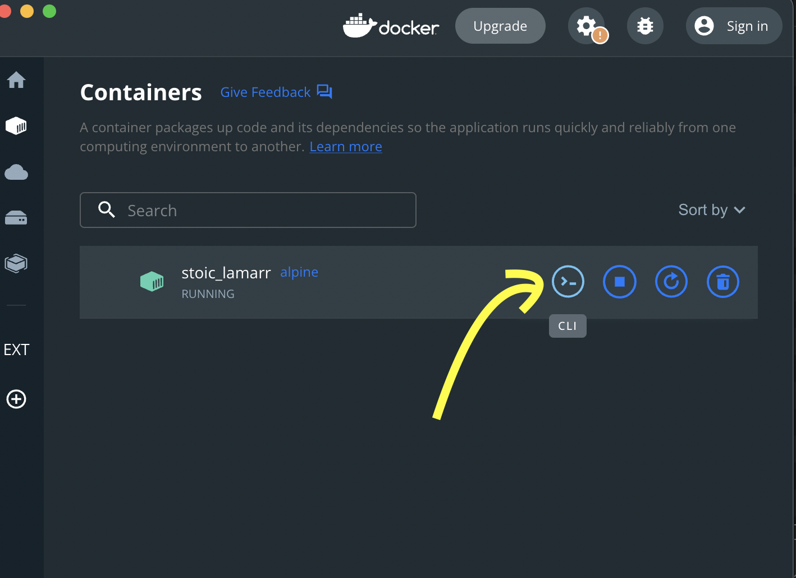
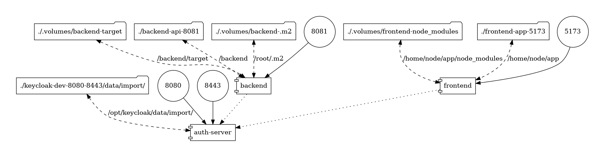

docker run -it --rm alpineDocker sur le poste du développeur
Marc Bouvier
Docker
Docker est une plateforme permettant de lancer certaines applications dans des conteneurs logiciels.
Docker (logiciel)
— Wikipedia
— Wikipedia
Docker Compose
Docker Compose est un logiciel pour définir et exécuter des applications à partir de multiples conteneurs. Il est basé sur un fichier YAML qui permet de définir les services et les paramètres de leurs créations et ainsi de les démarrer par une commande unique.
Docker (logiciel) : Outils associés
— Wikipedia
— Wikipedia
Docker Hub
Catalogue d’images docker.
Ouvrir un terminal dans un container
Dans Docker Desktop

Cas d’utilisation 1/2
Utiliser des outils sans les installer
Tester un logiciel compliqué à installer
Test containers
Reproduire la CI en local
Environnements de développement conteneurisés
Cas d’utilisation 2/2
Lancer des logiciels dont on ne connaît pas la technologie
Tester une nouvelle version d’un langage
Être admin dans un container
Infrastructure éphémère
Bac à sable
Simuler l’environnement cible en local
01 Utiliser des outils sans les installer
base de données
serveur d’authentification
RabbitMq — installation classique
Installation classique de RabbitMq

RabbitMq — lancement avec docker
01-rabbitmq:
# http://localhost:15672
image: rabbitmq:3-management
container_name: rabbitmq
ports:
- "5672:5672"
- "15672:15672"
# guest / guestdocker compose up 01-rabbitmqAsciidoctor
html
pdf
slides
ebook
Démo Asciidoctor
Ces slides [1]
docker-compose.yml
build-slides:
image: "asciidoctor/docker-asciidoctor"
volumes:
- ./:/documents/
command:
- "asciidoctor-revealjs"
- "-a"
- "revealjsdir=https://cdnjs.cloudflare.com/ajax/libs/reveal.js/3.9.2"
- "01-slides/index.adoc"
- "-o"
- "docs/index.html"docker compose run build-slides02 Tester un logiciel compliqué à installer
Démo Nextcloud + PostgreSQL
services:
nc:
# http://localhost/login
# admin / admin
image: nextcloud:apache
environment:
- POSTGRES_HOST=db
- POSTGRES_PASSWORD=nextcloud
- POSTGRES_DB=nextcloud
- POSTGRES_USER=nextcloud
ports:
- 80:80
restart: always
volumes:
- .volumes/nc_data:/var/www/html
db:
image: postgres:alpine
environment:
- POSTGRES_PASSWORD=nextcloud
- POSTGRES_DB=nextcloud
- POSTGRES_USER=nextcloud
restart: always
volumes:
- .volumes/db_data:/var/lib/postgresql/data
expose:
- 5432docker compose -f 02-tester-logiciel-compliqué/nextcloud/docker-compose.yml up03 Test Containers
Spring Boot + TestContainers + Redis 1/2
@RunWith(SpringJUnit4ClassRunner.class)
@SpringBootTest(classes = DemoApplication.class,
webEnvironment = WebEnvironment.RANDOM_PORT, properties = {
"spring.datasource.url=jdbc:tc:postgresql:11-alpine:///databasename",
})
@ActiveProfiles("test")
public abstract class AbstractIntegrationTest {
static GenericContainer<?> redis = new GenericContainer<>(
DockerImageName.parse("redis:3-alpine"))
.withExposedPorts(6379);
@DynamicPropertySource
static void redisProperties(DynamicPropertyRegistry registry) {
redis.start();
registry.add("spring.redis.host", redis::getHost);
registry.add("spring.redis.port", redis::getFirstMappedPort);
}
}Spring Boot + TestContainers + Redis 1/2
public class DemoControllerTest extends AbstractIntegrationTest {
@Autowired
TestRestTemplate restTemplate;
@Autowired
DemoRepository demoRepository;
@Test
public void simpleTest() {
String fooResource = "/foo";
restTemplate.put(fooResource, "bar");
assertThat(restTemplate.getForObject(fooResource, String.class))
.as("value is set")
.isEqualTo("bar");
}
@Test
public void simpleJPATest() {
DemoEntity demoEntity = new DemoEntity();
demoEntity.setValue("Some value");
demoRepository.save(demoEntity);
DemoEntity result = restTemplate.getForObject(
"/" + demoEntity.getId(), DemoEntity.class);
assertThat(result.getValue())
.as("value is set")
.isEqualTo("Some value");
}
}Démo
cd 03-test-containers/spring-boot/
./gradlew build04 Reproduire la CI en local
05 Environnements de développement conteneurisés
Code Server
Editeur de code pré-configuré sur le navigateur.
Démo
05-code-server:
# http://localhost:8094
image: registry.gitlab.com/crafting-software/online-code/js
user: code
ports:
- "8094:8080"
environment:
- PASSWORD=testingdocker compose up -d 05-code-server06 Lancer des logiciels dont on ne connaît pas la technologie
Awesome Docker Compose starters
Conversion de .mov en .gif
alias video2gif='sudo docker run -v=`pwd`:/tmp/ffmpeg kafebob/video2gif'video2gif rabbitmq_manual_installation.mov rabbitmq_manual_installation.gif07 Tester une nouvelle version d’un langage
Java 8
07-movie-rental-java-8:
image: "maven:3-openjdk-8-slim"
working_dir: "/java-app"
volumes:
- "./07-movie-rental-java-8:/java-app"
- "./.volumes/07-movie-rental-java-8-.m2:/root/.m2"
command:
- "mvn"
# - "-Dmaven.compiler.source=8"
- "clean"
- "test"docker compose run 07-movie-rental-java-8Java 17
07-movie-rental-java-17:
image: "maven:3-openjdk-17-slim"
working_dir: "/java-app"
volumes:
- "./07-movie-rental-java-17:/java-app"
- "./.volumes/07-movie-rental-java-17-.m2:/root/.m2"
command:
- "mvn"
# - "-Dmaven.compiler.source=17"
- "clean"
- "test"docker compose run 07-movie-rental-java-1708 Être admin dans un conteneur
installer des paquets sur une image
09 Infrastructure éphémère
Tiddlywiki
09-tiddlywiki:
# http://localhost:8082
image: "nicolaw/tiddlywiki"
ports:
- "8082:8080"
volumes:
- "./09-tiddlywiki:/var/lib/tiddlywiki"docker compose up -d 09-tiddlywiki10 Bac à sable
Réduire la boucle de feedback pour optimiser du code
How to be proud of an experimentation — Bertand Bougon
Apprendre les commandes linux
11 Simuler l’environnement cible en local
Keycloak + Vuejs + Spring-boot 1/3
version: "3.8"
# This docker compose file assumes that the local loopback (127.0.0.1)
# is bound to the hostname `kubernetes.docker.internal`
#
# For users that are using Docker Desktop (Windows, MacOs)
# They should already have the following binding in
# `/etc/hosts` or `c:/windows/system32/drivers/etc/hosts`
#
# Linux user will need to add it : `etc/hosts`
#
# 127.0.0.1 kubernetes.docker.internal
services:
auth-server:
# http://kubernetes.docker.internal:8080
# admin / admin
image: "quay.io/keycloak/keycloak:19.0.1"
ports:
- "8080:8080"
- "8443:8443"
env_file:
- "keycloak-dev-8080-8443/.env.docker-compose"
volumes:
- "./keycloak-dev-8080-8443/data/import/:/opt/keycloak/data/import/"
command:
- "start-dev --import-realm"
backend:
# http://kubernetes.docker.internal:8081
image: "maven:3-openjdk-17-slim"
working_dir: "/backend"
depends_on: ["auth-server"]
volumes:
- "./.volumes/backend-target:/backend/target"
- "./backend-api-8081:/backend"
- "./.volumes/backend-.m2:/root/.m2"
ports:
- "8081:8081"
env_file:
- "backend-api-8081/.env.docker-compose"
command:
- "mvn"
- "-Dmaven.compiler.source=17"
- "spring-boot:run"
frontend:
# http://kubernetes.docker.internal:5173
# user / user
image: "node:lts"
working_dir: "/home/node/app"
depends_on: ["auth-server"]
volumes:
- "./.volumes/frontend-node_modules:/home/node/app/node_modules"
- "./frontend-app-5173:/home/node/app"
ports:
- "5173:5173"
entrypoint: [ "bash", "-c" ]
command:
- "npm install && npm run dev -- --host --mode docker-compose"Keycloak + Vuejs + Spring-boot 2/3
docker compose -f 11-simuler-environnement-cible/docker-for-local-development-bbl-main/docker-compose.yml up -dKeycloak + Vuejs + Spring-boot 3/3

docker run --rm -it --name dcv -v $(pwd):/input pmsipilot/docker-compose-viz render -m image -f docker-compose.yml🙏 Merci
Des questions? 🖐